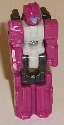
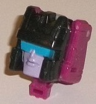
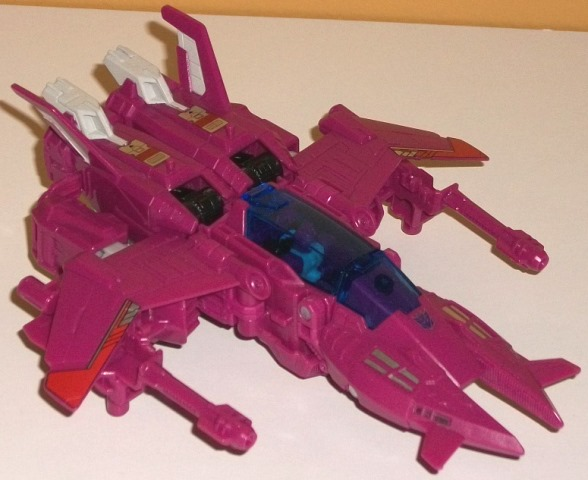
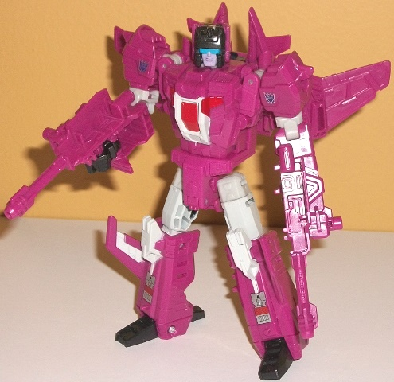

Allegiances
: Decepticon
Size
: Deluxe
Difficulty of Transformation
: Medium
Color Scheme
: Dark dull pink, and
some off-white, black, chalky dull white, red, moderately light blue, silver,
glossy lavender, and transparent dark blue
Rating
: 9.3
(NOTE: Because this is a repaint, this is not a full-blown review. This mainly covers any changes made to the mold and the color scheme, and merely compares it to Titans Return Triggerhappy w/ Blowpipe. For a review on the mold itself, read the review of Titans Return Triggerhappy w/ Blowpipe here .)


Given that Misfire is
a remold of Triggerhappy, Aimless is a remold of Blowpipe. And... *gasp*...
some actual thought was put into Aimless' robot mode! Oh, it's a straight
redeco of Blowpipe's, but the color scheme breakup is MUCH better-- more
like you'd expect from a regular-sized Transformer as opposed to many Titan
Masters, which are usually solidly one or two colors in their robot modes.
No sir, for Aimless, he's got an off-white body; dark dull pink on the
head, arms, and legs; and black on the upper legs. Plus, he's got actual
paint apps on his robot mode face! That hasn't happened since, like, Wave
1! He's got some lavender paint on his face and some fairly light blue
on his visor. So overall, this is actually a pretty good robot mode! Kinda
generic in its detailing, but pretty nice-looking! As for the head mode,
of course the front has been remolded to match Misfire's head. Misfire's
head wasn't exactly particularly unique in G1, and that's the case here
as well-- he's got a black-painted noggin, some short side antennae, another
little headcrest on the forehead, and like Aimless' robot mode he has blue
on the visor and lavender paint on the face. The facesculpt is pretty decent,
but not outstanding-- the lips do look a bit oddly puffy. Additionally,
because just the head is painted black but the arms and legs of the Titan
Master robot mode aren't, it looks a bit odd seeing the dull pink peek
out there on the rear two-thirds of the head.


Misfire really stretches
the meaning of "remold". Basically, the legs and feet are completely taken
wholesale from Triggerhappy, along with a few minor connector parts like
the middle sections of the arms. But particularly in vehicle mode, you'd
easily be forgiven for thinking he's a completely new mold at first glance.
Basically the entire vehicle mode (again, beyond the rear main body/leg
portion) is new. The jet mode has been completely redone to make it look
like Misfire's futuristic G1 alien jet mode, with the proportions only
modified slightly to look more modern. Misfire certainly has a unique jet
mode; angular wings that then angle forward AND down near the ends; a long
slim sleek cockpit; and a nosecone with two points with little fins that
come off those nosecones near the front. It's a really unique look, and
one I quite like. As opposed to having the wings on the robot arms, the
robot arms instead hide partially underneath the wings and peg into the
legs near the rear, similar to where the sides of the chest pegged into
Triggerhappy's alt mode. I do consider Misfire's re-configuration here
to be a bit of a downgrade-- whereas Triggerhappy's arms were pretty well
configured into his overall jet mode, here the arms are only partially
hidden by the wings and kinda stick out of the rear sides. Misfire also
has two guns that peg under his wings that can combine together to form
a larger double-barreled gun that a Titan Master can sit in just like with
Triggerhappy, but Misfire's guns are entirely new pieces, too. I'm honestly
kind of surprised as this was completely unnecessary, but still much appreciated.
Misfire has some great mold detailing in this mode, with several little
angular shapes on the nosecone bits, and some armor/vent bits on the wings.
The color scheme is definitely something from the late '80s, as Misfire
is, well.... pink. That's not a major color used on most TFs are that aren't
Arcee
.
If it were a normal pink I think it would look too light, but this darker,
duller pink actually works pretty well on this alien aircraft-- it's actually
just a tad more pink than fuchsia. The transparent dark blue cockpit fits
in well with the pink and provides a nice central "contrasting" color.
As for paint, there's some off-white near the back end, a bit of silver
on the nosecone bits, and some silver/red decals on the parts that become
the lower legs and on the edge of his wings. These are clearly "sticker-like"
details meant to emulate those on the G1 toy, but thankfully these aren't
stickers, they're paint. Unfortunately, unlike with Triggerhappy, Misfire
has no landing gear.
The transformation for
the mold has been changed and simplified a bit. There's no more twisting
around of the nosecone to the back and the legs to the front (unfortunately--
I rather liked that twist). Instead it's more of a straightforward "fold
the front part onto the back, unfold the legs, fold the arms up the sides"
transformation. The wings are attached to the shoulders, so you have to
rotate those wings a bit as you fold the arms up, but it's a bit more straightforward
than with Triggerhappy. As such, the nosecone bits and the wings hang off
the back and shoulders some. I honestly don't mind the nosecone bits that
much because they just barely stick out and help enhance Misfire's silhouette,
but the wings I wish could compress somehow. They can fold back a bit from
the shoulders to prevent them getting in the way of articulation, but it's
still a minor eyesore. Otherwise Misfire's proportions are pretty solid,
and aside from the broader shoulders they're pretty similar to Triggerhappy's,
with the mold reusage a bit more obvious in this mode. (His articulation's
identical to Triggerhappy's minus the ability to have arm-guns fold forward
in place of the fists, of course). The mold detailing on the chest, waist,
and arms continues the fairly intricate detailing from vehicle mode, with
several armor stripes, plates, and vents molded in all over the place.
The off-white is more evident as part of the color scheme in this mode,
being on the upper legs, knees, middle of the arms, and painted on the
chest, which helps break up the color scheme since the dark blue cockpit
is now out of the way. There's also some red on the chest as well, which
honestly is a bit of a waste as it's too close to the dull pink to really
add much to the color scheme where it is. There is some black on the fists
and feet, though, which forms another nice contrast color.
Titans Return Misfire
is a pretty impressive remold, taking just most of the Titan Master, the
legs, and the "skeleton design" of Triggerhappy and otherwise completely
changing everything else, making this a much more satisfying update to
the character than if he were just a slight remold of Triggerhappy. I think
the transformation is a bit less satisfying and he's got a little more
kibble (wings and bit of the nosecone in robot mode, arms in vehicle mode),
but it's still a great, solid design. The color scheme is also pretty decent,
and I'm saying that as a guy who normally doesn't like pink. Highly recommended--
even if you already have Triggerhappy (though if you only get one, get
Triggerhappy).
Review by Beastbot